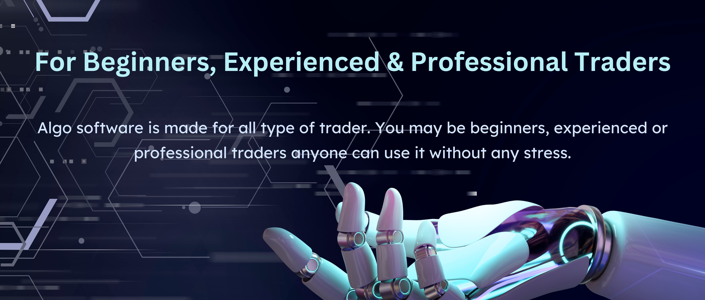

Algo Trading
Algorithmic trading is a process for executing orders exercising automated and pre-programmed trading instructions to regard for variables similar as price, timing and volume. An algorithm is a set of directions for working a problem. Computer algorithms shoot small portions of the full order to the request over time. Algorithmic trading makes use of complex formulas, combined with fine models and mortal oversight, to make opinions to buy or vend fiscal securities on an exchange. Algorithmic dealers frequently make use of high- frequency trading technology, which can enable a establishment to make knockouts of thousands of trades per second. Algorithmic trading can be used in a wide variety of situations including order prosecution, arbitrage, and trend trading strategies.
Intraday Indicator Strategy is working only in AlgoJunction., EQUITY & MCX Market. This strategy is completely algo trading strategy. In this strategy our system works only intraday trading. In this system, only short deals are done. Our system has made a short trade position every day on the base of plutocrat operation and threat operation in the named stock. In this short cell strategy, our system works with a mandatory fixed stop loss.
Short selling is a new conception to numerous dealers. Most people are familiar with the" buy low, vend high" strategy that most investors use, still many are apprehensive of the fact that you can vend high and buy low. Short selling stocks allow you to benefit from a stock as it's dropping in price. Basically, you adopt shares from your broker to vend and you're responsible for returning those shares at a after point. However, you'll buy the shares at cheaper price than you vended them for, If the trade works in your favor.
Algorithmic trading is the use of process-and rules- grounded algorithms to employ strategies for executing trades.
It has grown significantly in fashion ability since the early 1980s and is used by institutional investors and large trading enterprises for a variety of purposes.
While it provides advantages, similar as faster prosecution time and reduced costs, algorithmic trading can also complicate the request's negative tendencies by causing flash crashes and immediate loss of liquidity.

The use of algorithms in trading increased after computerized trading systems were introduced in American financial markets during the 1970s. In 1976, the New York Stock Exchange introduced the Designated Order Turnaround (DOT) system for routing orders from dealers to specialists on the exchange floor. In the following decades, exchanges enhanced their capacities to accept electronic trading, and by 2009, over 60 percent of all trades in the U.S. were executed by computers.
Author Michael Lewis brought high-frequency, algorithmic trading to the public’s attention when he published the best-selling book "Flash Boys," which chronicled the lives of Wall Street traders and entrepreneurs who helped create the companies that came to define the structure of electronic trading in America. His book argued that these companies were engaged in an arms race to build ever faster computers, which could communicate with exchanges more quickly, to gain advantage on competitors with speed, using order types which served them to the detriment of average investors.
In recent times, the practice of do-it-yourself algorithmic trading has become widespread. Hedge funds like Quintilian, for example, crowdsource algorithms from amateur programmers who compete to win commissions for writing the most profitable code. The practice has been made possible by the spread of high-speed internet and the development of ever-faster computers at relatively affordable prices. Platforms like Quantic have sprung up to serve day traders who wish to try their hand at algorithmic trading.
Another significant technology on Wall Street is machine learning. New developments in artificial intelligence have enabled computer programmers to develop programs that can improve themselves through an iterative process called deep learning. Traders are developing algorithms that rely on deep learning to make themselves more profitable.
Functioning with software, a computer program will automatically monitor the stock price (and the moving average indicators) and place the buy and sell orders when the defined conditions are met. The trader no longer needs to screen live costs and charts or put in the orders manually. The algorithmic trading system does this automatically by effectively and accurately identifying the trading opportunity.
Algo trading is beneficial for short-term,long-term and every kind of investors due to its number of benefits mentioned below-
Algo trading could be profitable to those organizations who need to spread out the execution of a larger order or perform trades too fast for human traders to react to.
Turn your concept,website or Application into a working thing
Disclaimer: We are not a SEBI registered investment advisor, therefore, none of our ALGO STRATEGIES shall be considered as an investment advice. | Market participants shall use these ALGO STRATEGIES for their knowledge purposes only. CONSULT YOUR INVESTMENT OR ADVISOR BEFORE INVESTING. | AlgoJunction isn't liable for your profits or losses. |All the fees paid to AlgoJunction is non-refundable.